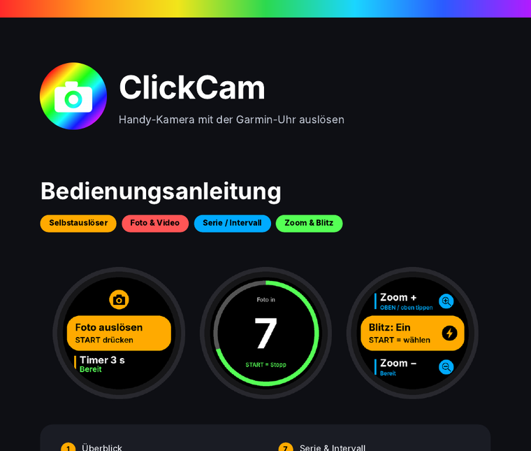

ClickCam
Handy-Kamera mit der Garmin-Uhr auslösen – Selbstauslöser, Foto & Video, Serie/Intervall, Zoom & Blitz

Bedienungsanleitung (Deutsch)PDF öffnen
Handy-Kamera mit der Garmin-Uhr auslösen – Selbstauslöser, Foto & Video, Serie/Intervall, Zoom & Blitz
